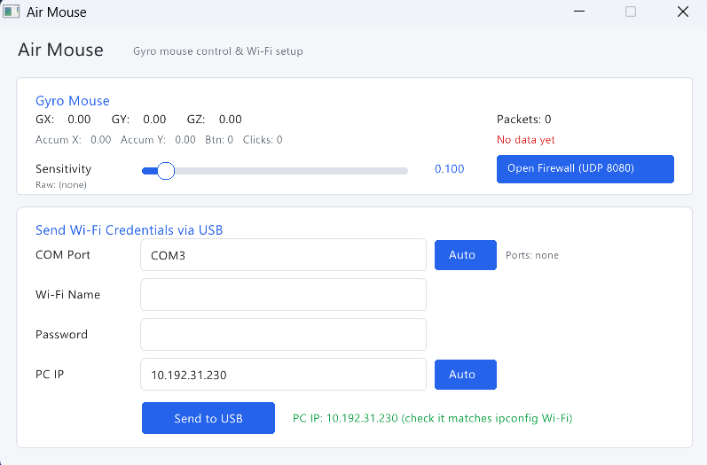
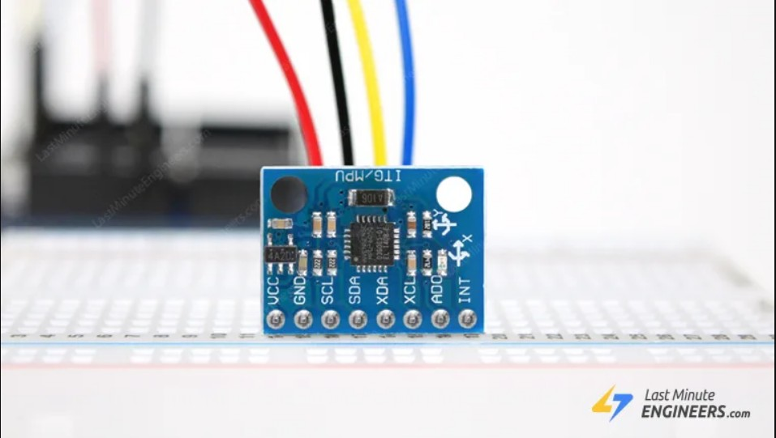
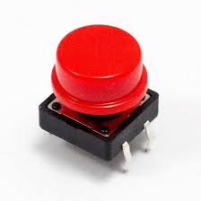

HoldThePlace
A cooler mouse using gyroscope and gun model
A cooler mouse using gyroscope and gun model
บทคัดย่อ (Abstract)
โปรเจกต์นี้ถูกสร้างขึ้นเพื่อเพิ่มอรรถรสในการเล่นเกมแนว First Person Shooting (FPS) โดยใช้บอร์ด Arduino และเซ็นเซอร์ Gyroscope ในการตรวจจับการเคลื่อนไหว จากนั้นส่งข้อมูลไปยังคอมพิวเตอร์ผ่านโปรโตคอล UDP และ Socket ทำให้เคอร์เซอร์บนหน้าจอสามารถเคลื่อนไหวตามการขยับปืนจำลองของผู้เล่นได้แบบเรียลไทม์.
รายละเอียด (Information)

โปรแกรม Air Mouse เป็น Gui ที่สามารถปรับความเร็ว(Sensitivity)ของเมาส์ได้และเช็คค่าของGyroที่ได้รับและสามารถตั้งค่าPort,Wifi Name,Password,IP เพื่อเชื่อมArduinoเข้ากับPCที่ต้องการได้
วิธีทำงานของโค้ด (Logic)
ระบบแบ่งเป็นสองส่วนที่คุยกันผ่าน Wi-Fi: Arduino วัดการเคลื่อนไหวของปืนจำลองแล้วส่งข้อมูลออกไป ส่วนโปรแกรมบน PC รับข้อมูลนั้นมาแปลงเป็นการขยับเคอร์เซอร์และการคลิก
[Gyroscope + ปุ่มไก] → Arduino UNO R4 → (Wi-Fi / UDP พอร์ต 8080) → โปรแกรม PC → เคอร์เซอร์ / คลิก
ฝั่ง Arduino
ตอนเปิดเครื่อง
- โหลดค่าเครือข่าย: อ่าน SSID, รหัส Wi-Fi และ IP ของ PC จาก EEPROM โดยใช้ตัวเช็ก
"CFG"บอกว่าเคยบันทึกค่าไว้แล้วหรือยัง - ตั้งค่าครั้งแรก: ถ้ายังไม่มีค่าที่บันทึกไว้ บอร์ดจะรอรับข้อความทาง USB Serial รูปแบบ
SSID;PASSWORD;PC_IPแล้วบันทึกลง EEPROM และเชื่อมต่อ Wi-Fi ให้ทันที - คาลิเบรตไจโร: อ่านค่าตอนวางนิ่ง 1,000 ครั้งแล้วเฉลี่ยเป็นค่า offset (จุดศูนย์) จึงต้องวางบอร์ดให้นิ่งตอนเปิดเครื่อง
ลูปหลัก (ทุก 5 ms หรือประมาณ 200 ครั้งต่อวินาที)
- อ่านค่าการหมุนดิบแกน X, Y, Z แล้วลบด้วยค่า offset
- อ่านสถานะปุ่มไกที่ขา 8 (ใช้
INPUT_PULLUPจึงเป็น 0 เมื่อกดปุ่ม) - ส่งแพ็กเก็ต UDP รูปแบบ
gx,gy,gz,ปุ่มเช่น12,-340,25,1ไปยัง PC ที่พอร์ต 8080 - รับคำสั่งขาเข้าที่พอร์ต 4211 แล้วส่งค่าไปที่ขา 6 ด้วย
analogWrite(เตรียมไว้ต่อ LED หรือมอเตอร์สั่นในอนาคต ตอนนี้ฝั่ง PC ยังไม่ได้ส่งคำสั่งมา)
ฝั่ง PC
ขั้นตอนที่ทำซ้ำในทุกเฟรม
- รับข้อมูล: ดึงแพ็กเก็ต UDP ที่ค้างอยู่ทั้งหมดจากพอร์ต 8080 ด้วย socket แบบ non-blocking เพื่อไม่ให้หน้าจอค้าง
- แยกค่า: ฟังก์ชัน
gyroParserแยกข้อความเป็น gx, gy, gz และสถานะปุ่ม - ตัด noise (Dead zone): ค่าในช่วง ±100 ถือเป็น 0 เพื่อกันเคอร์เซอร์ไหลเองจาก noise และ drift ส่วนค่าที่เกินจะถูกลบ 100 ออก เพื่อไม่ให้เคอร์เซอร์กระตุกตอนข้ามเส้น
- แปลงหน่วย: หารด้วย 131 ให้เป็นองศาต่อวินาที (สเกล ±250°/s ของ MPU6050)
- ปรับความไวและแมปแกน: คูณด้วยค่า Sensitivity จากสไลเดอร์แล้วกลับเครื่องหมาย โดย
gzคุมแนวนอน และgxคุมแนวตั้ง (ขึ้นอยู่กับทิศที่ติดเซนเซอร์ในตัวปืน) - ตัวสะสม (Accumulator): เคอร์เซอร์ขยับได้ทีละพิกเซลเต็มเท่านั้น โปรแกรมจึงขยับตามส่วนจำนวนเต็มด้วย
mouse_move_relativeแล้วเก็บเศษทศนิยมสะสมไว้ ทำให้การขยับช้า ๆ ไม่ถูกปัดทิ้ง - คลิก: แพ็กเก็ตแรกใช้กำหนดว่า "ไม่ได้กด" คือค่าใด เมื่อปุ่มเปลี่ยนจากว่างเป็นถูกกด จะคลิกซ้าย 1 ครั้ง (กดลง รอ 15 ms แล้วปล่อย) กดไกหนึ่งครั้งจึงได้หนึ่งคลิกพอดี ไม่คลิกรัว
หมายเหตุ: ไจโรให้ค่าความเร็วในการหมุน ไม่ใช่ตำแหน่ง ระบบจึงทำงานเหมือนเมาส์ทั่วไปที่ขยับแบบสัมพัทธ์ ไม่ใช่เลเซอร์พอยน์เตอร์ที่ชี้ตำแหน่งบนหน้าจอโดยตรง
Arduino Uno R4
32-bit microcontroller board running at 48 MHz to process motion sensor data and manage real-time communication.

Gyroscope
Precision motion-tracking sensor to detect angular rotation and pitch/yaw movements for smooth aiming control.

button
Tactile switch mounted on the gun model to handle trigger inputs and shooting actions in real-time.
